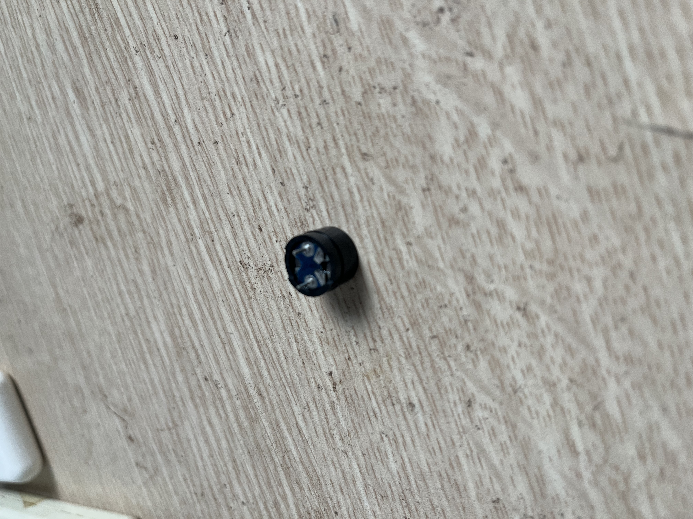

P10 Buzzer
ESP32 phát tone PWM qua buzzer 2 chân để học khác biệt giữa duty cycle và frequency.
An toàn
ESP32 GPIO là 3.3V logic. Không cấp 5V vào GPIO25. Bài này đặt điện trở 220Ω nối tiếp buzzer để giới hạn dòng từ chân GPIO.
Ảnh linh kiện



Nối dây
| Phần | Landing | ESP32 rời | Vai trò |
|---|---|---|---|
| Điện trở 220Ω chân 1 | d10 / a10 | D25 | Nhận PWM tone |
| Điện trở 220Ω chân 2 | d15 / e15 | — | Sang buzzer + |
| Buzzer + | e15 | — | Đầu dương buzzer |
| Buzzer - | e20 / a20 | GND | Mass chung |
ESP32 D25 ──tím── a10 ═ d10 ──[220Ω]── d15 ═ e15 Buzzer +
ESP32 GND ──nâu── a20 ═ e20 Buzzer -Board map
Chi tiết: boards/p10.md. ESP32 rời breadboard; sơ đồ chỉ đánh dấu landing, điện trở và buzzer trên MB102.
Buzzer: + tại e15, - tại e20. Điện trở 220Ω: d10 ↔ d15.
Các bước làm
- Reset breadboard trắng; ESP32 chỉ cắm USB và để ngoài breadboard.
- Cắm điện trở 220Ω từ
d10sangd15. - Cắm buzzer: chân
+qua jumper đỏ vàoe15, chân-qua jumper đen vàoe20. - Nối jumper tím từ ESP32
D25vàoa10. - Nối jumper nâu từ ESP32
GNDvàoa20. main.cppđang chọnp10_setup/p10_loop.pio run -t upload; buzzer sẽ lặp pattern 440Hz → 660Hz → 880Hz rồi nghỉ.
Atomic trace
p10WriteTone(440)cấu hình LEDC PWM 440Hz.- GPIO25 phát xung 0–3.3V qua dây tím tới
a10. - Xung đi qua điện trở 220Ω
d10 → d15. - Buzzer nhận xung tại
e15, rung/phát âm. - Dòng về GND qua
e20/a20và dây nâu.
Hoàn thành khi
- Buzzer phát được pattern 3 nốt rồi nghỉ.
- Serial Monitor 115200 in lần lượt
tone 440 Hz,tone 660 Hz,tone 880 Hz. - Bạn phân biệt được duty cycle là độ mạnh xung, frequency là cao độ âm.